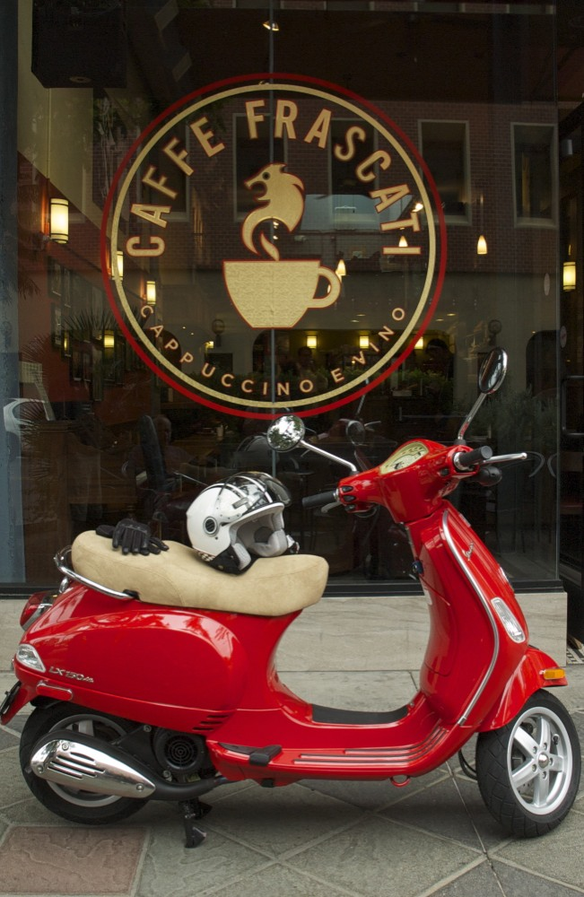

About Us
Inspired by my years living and working in Italy, Caffe Frascati aims to bring you the best cappuccino outside of Rome, and the tasty panini you can enjoy in the villages that dot the Umbrian countryside. We love being part of this community and that's why we'd like to contribute by bringing a little bit of Italy to San Jose. And we'd like to thank all of you who have supported us so far, and look forward to seeing you during and after our transition.